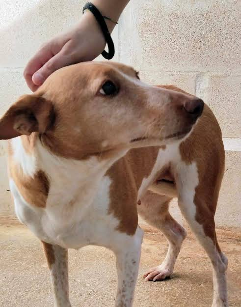
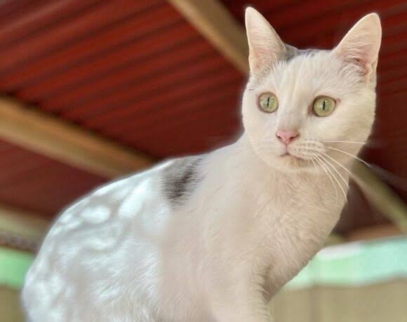
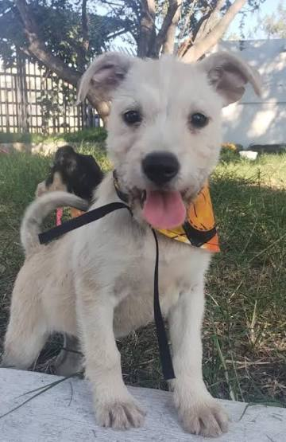
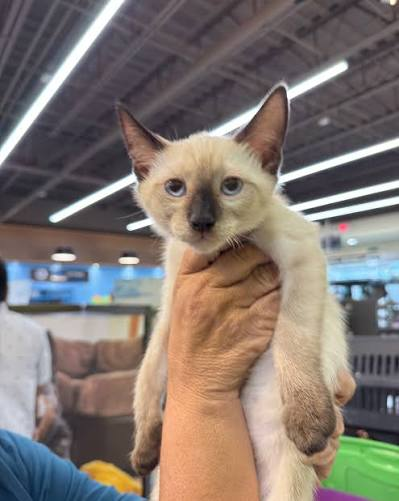

Max
Perro - 2 añosMacho, mestizo, mediano. Es muy juguetón, cariñoso y conviviente con otros perros.
Conoce a los amiguitos que están buscando un hogar amoroso

Macho, mestizo, mediano. Es muy juguetón, cariñoso y conviviente con otros perros.

Hembra, esterilizada. Tranquila, le encanta tomar el sol y recibir mimos.

Cachorro muy enérgico y sociable. Cuenta con sus primeras vacunas.

Macho, independiente y muy limpio. Ideal para departamentos.